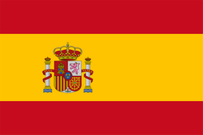
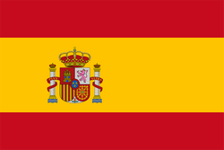
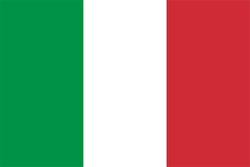
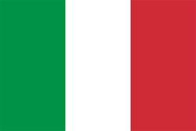

 



The 1994 FIFA World Cup was the 15th FIFA World Cup, the world championship for men's national soccer teams. It was hosted by the United States and took place from June 17 to July 17, 1994, at nine venues across the country. The United States was chosen as the host by FIFA on July 4, 1988. Despite soccer's relative lack of popularity in the host nation, the tournament was the most financially successful in World Cup history; it broke tournament records with overall attendance of 3,587,538 and an average of 68,991 per match, marks that stood unbroken as of 2018 despite the expansion of the competition from 24 to 32 teams starting with the 1998 World Cup. Brazil won the tournament after beating Italy 3–2 in a penalty shoot-out at the Rose Bowl in Pasadena, California near Los Angeles, after the game had ended 0–0 after extra time. It was the first World Cup final to be decided on penalties. The victory made Brazil the first nation to win four World Cup titles. There were three new entrants in the tournament: Greece, Nigeria and Saudi Arabia plus Russia, following the breakup of the Soviet Union, and for the first time since 1938, a unified Germany took part in the tournament.
Three nations bid for host duties: United States, Brazil, and Morocco. The vote was held in Zurich on July 4, 1988, and only took one round with the United States bid receiving a little over half of the votes by the Exco members. FIFA hoped that by staging the world's most prestigious tournament there, it would lead to a growth of interest in the sport. An inspection committee also found that the proposed Brazilian stadiums were deficient, while the Moroccan bid relied on the construction of nine new stadiums. Conversely, all the proposed stadiums in the United States were already built and fully functioning; US Soccer spent $500 million preparing and organizing the tournament, far less than the billions other countries previously had spent and subsequently would spend on preparing for this tournament. The U.S. bid was seen as the favorite and was prepared in response to losing the right to be the replacement host for the 1986 tournament following Colombia's withdrawal. One condition FIFA imposed was the creation of a professional soccer league—Major League Soccer was founded in 1993 and began operating in 1996. There was some initial controversy about awarding the World Cup to a country where soccer was not a nationally popular sport, and at the time, in 1988, the U.S. no longer had a professional league; the North American Soccer League, established in the 1960s, had folded in 1984 after attendance faded. The success of the 1984 Summer Olympics, particularly the soccer tournament, also contributed to FIFA's decision.[citation needed]